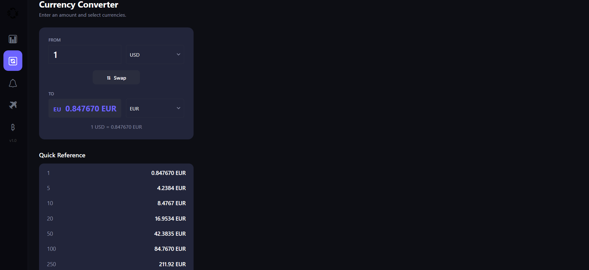
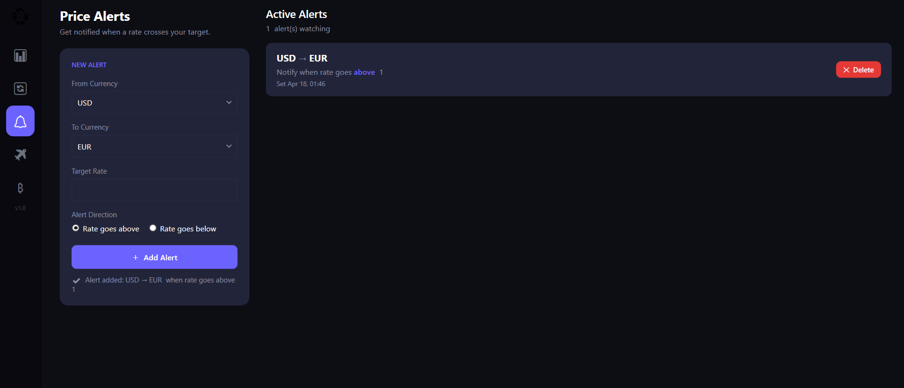
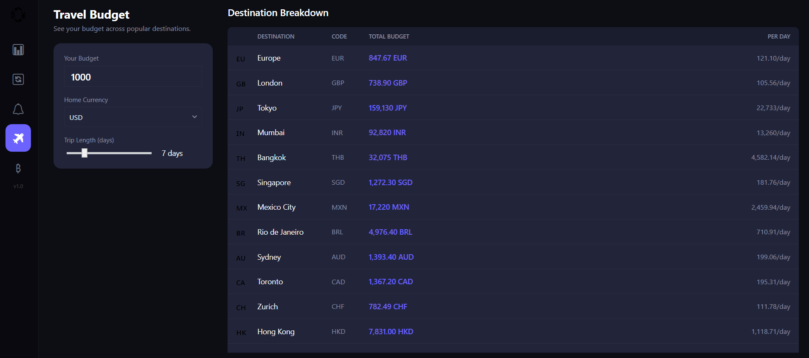
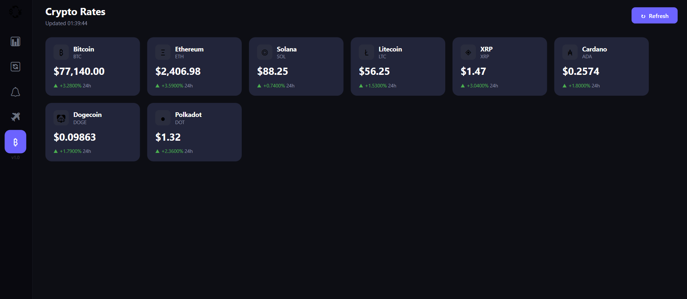

What it does
Most currency apps are bare converters — type two currencies, get a number, close the app. Currency Pulse does more. It keeps a live watchlist of the currencies you actually care about, tracks them with mini trend charts, and notifies you the moment a rate crosses a target you set. It even includes a travel budget planner and live crypto prices, all in one place.
Everything runs as a fast native Windows app. No account, no subscription, no setup — open it and your rates are already there.
Five tools, one dashboard
Live Rates
A personal watchlist of 30+ currencies, refreshed automatically. Each card shows the current rate plus a 10-day trend sparkline at a glance.
Converter
Fast cross-rate conversion between any two currencies, with a built-in quick-reference table for common amounts from 1 to 10,000.
Price Alerts
Set a target rate and get a Windows notification the moment it's crossed — above or below. Never miss the right moment to exchange.
Travel Budget
Enter a budget and trip length, then see what it's worth across 18 popular destinations — with a per-day spending breakdown for each.
Crypto Rates
Track Bitcoin, Ethereum, Solana, and more alongside your fiat currencies, each with its live price and 24-hour change.
Fast & native
A lightweight native app that opens instantly. Your watchlist and alerts are saved locally — no account or sign-in required.
Why people keep it open
- Your most-used currencies are always on screen — no retyping the same pair every time
- Price alerts watch the market for you, so you don't have to keep checking
- The travel planner answers "how far does my budget go?" for a whole trip in one glance
- Fiat and crypto live side by side — no switching between apps
A look inside




Good to know
Currency Pulse is a native WPF app for Windows 10 and 11. Your watchlist and alerts are stored locally on your device — no account is required. Live rates come from public exchange-rate and crypto data sources, so an internet connection is needed to refresh prices. Available on the Microsoft Store.